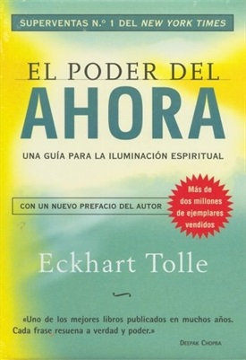

Este clásico de la literatura inglesa es una de mis obras favoritas. La historia de Elizabeth Bennet y el señor Darcy es un viaje emocional que explora temas como el amor, la familia y las convenciones sociales. Me encanta cómo Austen retrata las complejidades de las relaciones humanas con un toque de ironía y elegancia.
"Sigue mi voz" de Ariana Godoy
Este libro es una historia de amor y superación personal que me atrapó desde la primera página. La protagonista, Hera, es una joven que lucha por seguir su pasión por la música mientras enfrenta desafíos personales y familiares. La forma en que Ariana Godoy desarrolla los personajes y sus relaciones es simplemente maravillosa. Me hizo reír, llorar y, sobre todo, creer en el poder de seguir nuestros sueños.
"El Hobbit" de J.R.R. Tolkien
Una obra maestra de la fantasía que nunca deja de sorprenderme. La aventura de Bilbo Bolsón es emocionante y llena de imaginación. Tolkien crea un mundo tan rico y detallado que es imposible no sumergirse en él. Este libro me enseñó la importancia de la valentía y la amistad, incluso en los momentos más oscuros.
"Trilogía Demon" de Samleon
Esta trilogía es una mezcla perfecta de romance, acción y fantasía. La historia de los demonios y su lucha por encontrar su lugar en el mundo es fascinante. Samleon tiene una forma única de combinar elementos oscuros con momentos tiernos y emocionales. Cada libro de la trilogía me dejó con ganas de más, y el desarrollo de los personajes es simplemente excepcional.
"El poder del ahora" de Eckhart Tolle
Este libro transformador me ayudó a entender la importancia de vivir en el presente. Eckhart Tolle explica de manera clara y profunda cómo liberarnos de las cadenas del pasado y el futuro para encontrar la paz interior. Es un libro que recomiendo a cualquiera que busque una vida más plena y consciente.

"El club de las 5am" de Robin Sharma
Este libro cambió mi rutina por completo. Robin Sharma nos enseña cómo aprovechar las primeras horas del día para ser más productivos y enfocados. A través de una historia entretenida y llena de sabiduría, el autor comparte principios que pueden transformar nuestra vida. Desde que lo leí, me esfuerzo por levantarme temprano y aprovechar al máximo cada día.
"Los 5 lenguajes del amor" de Gary Chapman
Este libro es una guía esencial para entender cómo expresamos y recibimos amor. Gary Chapman explica que cada persona tiene un lenguaje principal de amor, y entenderlo puede mejorar nuestras relaciones significativamente. Aplicar estos conceptos en mi vida personal ha sido increíblemente útil y enriquecedor.
"El magnate" de Katy Evans
Una historia de amor intensa y apasionada que me mantuvo enganchada de principio a fin. La relación entre los protagonistas está llena de altibajos, pero es precisamente eso lo que la hace tan real y conmovedora. Katy Evans tiene un talento especial para crear personajes complejos y situaciones que te hacen sentir parte de la historia.